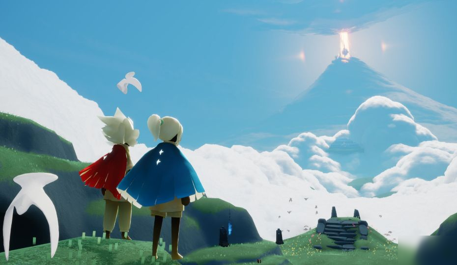

地图解析
MAP ANALYSIS
晨岛
晨岛，一个最初的地图，大家都叫它“梦开始的地方”，之所以这样称呼也一定有许多原因，
晨岛是天空王国的第一个场景，是每位 “光之后裔” 诞生的地方。给人一种宁静和温馨的感觉

云野
云野是天空王国的第二个场景，从晨岛的神庙飞出，跟着白鸟穿过斑斓的云彩，便会降落在云野。
这里有亮丽的色彩搭配，如广袤的云海、绿色的草原、五彩的花朵等
雨林
雨林是天空王国的第三个场景，穿越过云野最高处的宫殿后，穿越雨云即可到达。这里被云雾环绕
，常年累月下着淅淅沥沥的雨，冰凉的雨水会持续消耗旅人的能量，只有靠近光源才能维持心火。
霞谷
霞谷是天空王国的第四个场景，穿越雨林后即可到达。这里冰雪皑皑又沐浴在夕阳的霞光中，整体
呈现出一种温暖且宁静的黄昏美景
暮土
暮土是天空王国的第五个场景，从霞谷终点的漩涡进入即可抵达。这里终年被遮天蔽日的沙尘掩盖，天空呈现出灰暗的色调
通过探索和解锁先祖，进一步了解游戏的背景故事和世界观
禁阁
禁阁是玩家回顾王国历史、了解 “光之后裔” 使命的重要场所，也是通往最终挑战 “暴风眼” 的关键节点。玩家在此
可以解锁特殊的外观、乐器和道具，还能深入了解游戏的世界观和剧情
玩法介绍
INTRODUCE THE GAME
6月27日更新，敬请期待
一个小小的作者莫言开发的光遇独家攻略+代肝专网
© 2025 光遇莫言 版权所有 qq:2578442896
增值电信业务经营许可证：京 B2-20250123京 ICP 备 2202 号 - 1 |
工信部备案查询技术支持：暂无 法律顾问：无